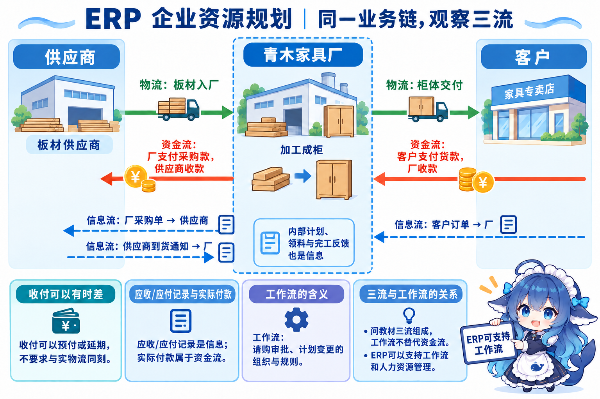
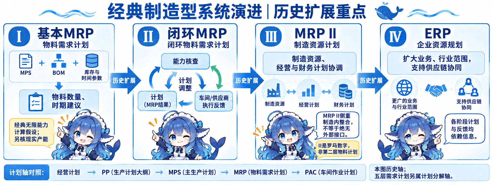
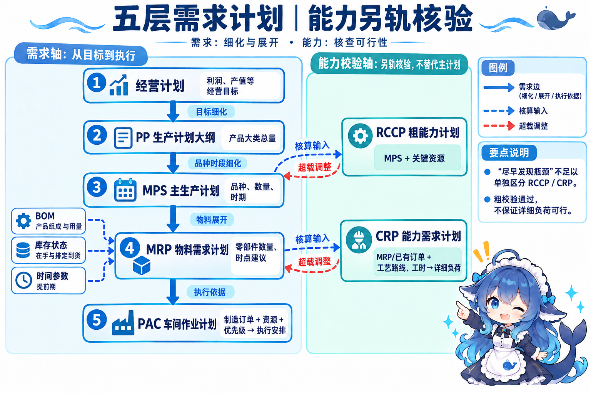
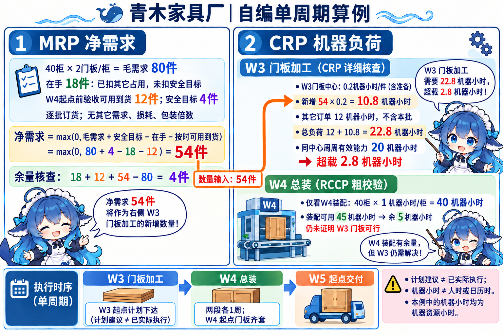

青木家具厂接到一批收纳柜订单。销售确认数量和交期，采购跟踪门板到货，车间安排加工与组装，财务记录成本及收付款。库存表算得出要补多少件，仍可能排不进机床；客户付了定金，也不表示柜体已经交付。ERP（Enterprise Resource Planning，企业资源规划）把这些业务及资源信息联系起来，为决策、计划、控制和经营业绩评估提供管理平台。
本节按教材的概念、结构、功能展开。家具厂是自编案例；四阶段制造系统演进、粗能力核查和物料净算，是结合已学记录与公开专业资料的关联补充。资源流、历史扩展、计划分解、能力校验各有自己的关系，下面逐项说明。
3.7.1 企业资源规划的概念：同一订单中的三流
ERP 既体现信息技术支持的管理思想，也落实为具体信息系统。它关注企业内部和相关外部资源，服务制造产品或提供服务的经营目标。教材强调从供需链观察资源，并把财务成本控制贯穿经营过程。软件的实际能力还取决于业务规则、数据和接口；系统名称本身不能保证资源已全部集成或成本已经最优。
按本版教材，三流是物流、资金流、信息流。在本例典型销售采购链中，板材从供应商进入厂内，经过加工装配成为柜体，再交给客户，这是物流；客户向厂付款、厂向供应商付采购款，这是资金流；订单、主生产计划、领料单、收货与完工状态是信息流。一个收货业务可同时改变库存记录、形成应付记录，并在随后发生付款，几类信息可以关联。
以青木厂为观察主体，客户付款是厂收款，厂支付采购款是厂付款。定金、赊销或分期付款会改变收付时点；退货与退款要按该事件另看方向。应收、应付的账款记录属于信息，不能当作已经实际收付的钱。本图采用典型正向物流和交易货款方向，未要求每件货移动时都同步发生同额现金。
工作流（Workflow）组织活动的规则与流转，例如请购审批、计划变更会签。明确问教材“三流组成”时，它不能替代资金流。ERP 仍可支持工作流、人力资源管理和其他业务功能。题干问资源流的类别，和问产品是否支持审批，采用的判断依据不同。




关联补充：从 MRP 到 ERP，管理范围怎样扩展
MRP（Material Requirements Planning，物料需求计划）依据 MPS（Master Production Schedule，主生产计划）、BOM（Bill of Materials，物料清单）、库存与时间参数形成物料数量和时期建议。基本物料计算不内置足以保证现实能力可行的约束，需要另核产能。这里的经典“无限能力”是计算假设，不能理解成厂里真的有无限机床。
闭环 MRP（Closed-Loop MRP）把计划、能力核查、车间及供应商执行反馈联系起来，实际收货、完工或延误可以促使计划调整。MRP II（Manufacturing Resource Planning，制造资源计划）进一步协调制造资源、经营和财务计划。II 是简称中的罗马数字，用来区别物料需求计划；本教材引言的英文还带 II。生产消耗和资金需求可以联系起来，信息处理早已参与这些计划与反馈。
ERP 扩大业务深度和行业范围，支持更多供应链协同。本版引言还列实验室、产品数据、业务流程、质量、库存、分销运输、人力资源及定期报告等范围。教材以“物流为核心、计划为主线”说明传统 MRP II，再强调 ERP 贯穿财务成本控制的侧重点；这不表示 MRP II 没有财务。传统制造内部集成重点，也不能推出它绝无供应商或外部接口；ERP 也不自动覆盖全部伙伴和渠道。四阶段讲的是经典历史扩展重点，后面的五层讲当前制造计划如何细化。ERP 出现后，物料计算与车间控制仍有用途。
教材把 ERP 名称提出归于 Gartner Group 1990 年，这是本版历史口径；本轮未取得当年原报告。引言的“各类企业软件都纳入 ERP”也按其当时用语理解，不作为今天所有软件的定义。


3.7.2 企业资源规划的结构：需求、能力与业务职责
教材文字按编号列出十一组模块；“采购与库存”“质量与设备”各为一组。原图 3-16 实际有二十个可见功能框，图框和文字组没有逐个对应关系；图中的主生产计划→厂级生产计划→车间作业计划也没有直接画出下面完整的五计划。采购、设备、工具、人事四分支实际从厂级生产计划下出，不能沿用转录图注误写的 MPS 起点。本册按经核职责另画教学关系。
五层需求计划：从经营目标到车间安排
经营计划确定利润、产值、市场等经营目标；PP（Production Planning，本版生产计划大纲）在可用资源和一定时期内把目标细化为产品大类产量，再由 MPS 安排计划品种、数量和时期。教材标题把经营计划与生产大纲括在一起，其正文仍明确 PP 根据经营计划制定，两个层次需分开。Production Planning 表示计划活动，Production Plan 表示计划结果；本节采用教材的 PP 展开。
例如某季度“大类收纳柜”产量分解为各型号各周的 MPS，汇总时要用同一产品归并、时期和单位；金额、柜数或不同季度不能直接相等。MPS 编制是本版 ERP 的主要工作，质量影响生产组织和资源利用：品种或交期安排失准，会继续传到物料与能力安排。教材称 MRP 是生产管理核心，承担这一进一步分解。本例 MPS 对象是最终柜体，工程系统也可按制造策略设置关键部件或其他计划项目，不能把本例对象推成所有 MPS 唯一范围。
MRP 把 MPS 的项目展开为自制件与采购件的数量和时间建议。PAC（Production Activity Control，本版车间作业计划）再依据制造订单、交期/优先级，以及设备、人员、物料和能力状况，安排适当车间执行。经典五层是经营计划→PP→MPS→MRP→PAC：前三项在本版制造决策计划语境，MRP 属管理计划，PAC 属执行计划。预测和销售输入并未新增第六需求层。
能力另轨：RCCP 与 CRP 看不同输入
RCCP（Rough-Cut Capacity Planning，粗能力计划）以 MPS 和关键资源做粗校验；CRP（Capacity Requirements Planning，能力需求计划）依据 MRP 计划及相关已排订单，结合工艺路线、资源标准工时，按工作中心与期间比较详细负荷和有效可用能力。RCCP 是关联补充，CRP 在本版结构中有正式模块。
同一个“尽早发现瓶颈”目标，两种核查都能承担。读 MPS/关键资源，还是 MRP/零部件订单与详细工艺，才能区分；粗能力通过也不能保证别的中心或期间通过。CRP 的覆盖期、路线和资源范围由计划及实现配置确定，不是无条件穷尽现实中所有工序。能力核查发现超载后需要调整计划、资源或外协安排并重新验证，它们不构成第六、第七需求层。


物料输入：组成、库存和工艺各提供什么
BOM 提供产品与组件的组成和用量；库存状态提供在手、占用及排定到货；MPS 给定计划项目和时期。连同提前期、批量等参数，MRP 才能从毛需求净算并形成计划订单建议。BOM 不等于仓库余额表，也不包含工作中心加工工时；后者由工艺路线及资源标准提供给能力核算。Oracle MRP 用户指南提供了这些输入与时间偏移的工程说明；本册数值均为另编简化案例。


自编计算：54 件门板，安排在哪一周
完整条件：W5 起点交付 40 柜，每柜用 2 件门板；总装提前期一周，在 W4 整周组装，门板必须 W4 起点齐套；自制门板提前期一周，在 W3 整周加工，W3 起点计划下达。离散周安排是本例约定，未模拟实际工厂的逐日班次。
门板在手 18 件已经扣除其他已分配占用，尚未扣安全库存目标；已排定到货 12 件确认在 W4 起点前验收且可用；期末希望保留 4 件。采用逐批订货，无其他需求、损耗、最小批量或包装倍数。
毛需求＝40 柜×2 件/柜＝80 件。
净需求＝max(0，毛需求＋安全目标−在手−按时可用到货)
＝max(0，80＋4−18−12)＝54 件。
余量核查：18＋12＋54−80＝4 件，恰好满足安全目标。
54 件是新增补充量。安全目标只处理一次；若在手数已经扣过安全量，公式要随其定义调整。组件需要时点来自总装开工，而非直接照抄柜体交付时点。W3 下达的仍是计划建议，实际执行还需要订单处理和现场条件。
对 W3 同一个门板中心，给定每件 0.2 机器资源小时（下文简记机器h，含准备工时），另有其他已排订单 12 机器h，且不含本批；W3 有效可用能力为 20 机器h。新增负荷＝54×0.2＝10.8 机器h；总负荷＝12＋10.8＝22.8 机器h；超载＝22.8−20＝2.8 机器h。负荷与能力必须同中心、同周、同资源单位。
与此同时，若 RCCP 在本例只核 W4 的关键装配资源，40 柜×1 机器h/柜＝40 机器h，对可用 45 机器h，尚余 5 机器h。它说明W4 这个关键装配资源通过，未核出 W3 门板中心的 2.8 机器h 缺口。详细负荷计算也没有自动给出可执行的有限能力排程。


改变条件再判断：如果 W3 计划下达前获知那 12 件不能按时验收可用，其他条件不变，净需求＝80＋4−18＝66 件；新增负荷＝66×0.2＝13.2 机器h，总负荷＝25.2 机器h，超载＝5.2 机器h。更新到货信息会传到物料数量与能力负荷，不能只改库存一格。若改成采购补充，便不再默认形成青木门板中心的这段自制负荷，要另核供应交期与供应条件。
可以考虑改期、调整资源、分包或可行的设备加班，再核材料、日期和有效能力。缺 2.8 机器h 不自动等于加班 2.8 日历小时一定足够；设备、效率、人员、维修与日历都可能限制实际取得的能力。
十一组业务职责，如何让执行反馈进入计划
需求分解覆盖制造计划的一部分；完整 ERP 还要管理业务与资源。下表对应本版十一编号组，说明同一订单中的作用。它是职责说明，不是某厂商必须提供的统一产品菜单。
| 教材编号组 | 职责与本例的联系 |
|---|---|
| 1 生产预测 | 预测市场需求，为经营计划、PP、MPS 提供编制依据；预测值不自动等于已承诺交付量。 |
| 2 销售管理（计划） | 连接企业、市场与客户，管理相关销售业务；高层销售计划影响经营判断，每笔订单录入并非都属战略决策。 |
| 3 经营计划（生产大纲） | 把经营生产目标细化为时期内、资源条件下的生产总量，向下指导 MPS；括号标题仍需分清两层。 |
| 4 主生产计划 | 细化品种、数量、时期，并按同口径汇总承接 PP，向 MRP 提供计划依据。 |
| 5 物料需求计划 | 展开自制与采购组件的数量、需要时点和计划订单下达日期，提供制造/采购计划建议。 |
| 6 能力需求计划 | 核算 MRP 所需能力，对可用能力识别瓶颈，与相关计划调整配合。 |
| 7 车间作业计划 | 依据制造订单、交期、优先级和可用资源安排车间执行，反馈实际完工与延误。 |
| 8 采购与库存管理 | 采购组织订单产生到收到货物的全过程；IM（Inventory Management，库存管理）处理物料进、出、存。此处 IM 限库存语境。 |
| 9 质量与设备管理 | 质量贯穿全部过程；TQM（Total Quality Management，全面质量管理）强调全过程及全员责任。设备管理覆盖寿命周期的物质与价值运动，维护、状态和折旧都可相关。 |
| 10 财务管理 | 用货币反映、监督经济活动，分类汇总业务数据支持决策；材料领用、加工消耗、成本及结算信息可关联。 |
| 11 相关扩展应用 | 客户关系管理 CRM（Customer Relationship Management）、分销资源管理、供应链管理 SCM（Supply Chain Management）与电子商务可作为独立系统销售实施，也可与 ERP 集成。 |
预测、质量与执行方式的几个边界
本版列预测方法为德尔菲（Delphi）方法、“移动平移法”、指数平滑法、非线性最小二乘曲线拟合法。第二项疑有转写问题，本轮未核原页高清图，故保留原词身份，不把它确认为标准算法或擅称官方勘误；实际理解可先掌握预测为前三层计划提供输入的作用。预测、订单、库存和能力仍要协调。
教材把 JIT（Just In Time，准时制）作为车间作业管理模式举例；“当前主流”按该版时期理解。PAC 是执行组织与控制的职责，JIT 是一种管理方式，二者不能互换全称，也不要求所有行业采用同一模式。
质量不能只看出厂检验，采购、加工、装配和交付环节都可能涉及；设备不能只看故障维修，还包括生命周期技术、经济和组织管理。实际收货数量、验收结果、库存占用、完工与资源状态回到计划，使下一次净算与能力核查使用更新依据。闭环需要这类反馈，单向画完一串订单还没有解释执行偏差怎样处理。
历年材料的版本边界：当前 2014 下半年原卷 Q19–21 对应 PP、MPS、CRP；旧整理材料把三空合成变式并将第三项改为 RCCP。第三项不可冒作原卷原答案，单凭“早发现瓶颈”也不足以唯一判 RCCP。原卷本地转录来自培训机构水印转载卷及答案详解，未称官方答案。
3.7.3 企业资源规划的功能：决策、行业与供应链
支持决策：财务、营销、制造、质量、服务维护和工程技术等子系统协作，持续汇集业务信息，支持质量、市场、客户满意度与经营绩效分析。运输、分销、售后、市场和人事等也在教材扩展范围内。可以支持多工厂、多地点乃至跨国经营，单厂同样能使用 ERP；及时性和数据完整性要看实际更新与接口。系统可提供计划和分析，人仍需核目标、事实及可行措施。
提供行业方案：除制造业，教材列商业与零售、金融、能源、公用事业、工程与建筑等解决方案。财务、人事、后勤等共性能力结合行业需求。零售关注商品与门店经营，工程关注项目资源与成本，它们不因没有家具 BOM 就被排除；行业特殊功能仍需按具体方案核。
扩大供应链协同：从企业内采购、生产、配送与销售，拓到行业或跨行业的供应、加工、分销、流通和消费者。青木厂可向供应商共享经过约定的滚动需求，收到交付确认后协调本厂计划。独立企业的数据、计划和接口可以合作，未要求所有伙伴共用一个物理数据库或完全相同的 ERP；合同、权限和责任仍需各自安排。优势互补、竞争力和成本收益是经营目标，要靠实际实施结果验证。


回到同一家具厂，怎样选择观察依据
登记订单是 TPS 的事务处理问题，汇总管理信息可联系 MIS，比较备选安排可用 DSS，咨询专业规则可用 ES，共审材料可用 OAS。ERP 观察跨职能资源与业务集成，这些功能可以协作，也可由同一产品提供。先读当前问题，再核历史范围、计划层次、物料输入或能力条件，才能解释换条件后的判断。